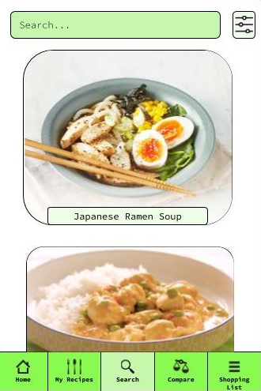

Our app
With our app, we want to continue the healthy image that we used for our poster by continuing the green colour scheme. On the Home page on the app, users make and edit their profile. By having a profile, they can access their favourite recipes and shopping lists on any device. Under the My Recipe page, users can save their favourite recipes. The app's layout is designed with universal design in mind. The basic idea of universal design is that you design something so that if it works for those with challenges, it works for everyone. In our app, we used images of the food and of the supermarket's logo as people with autism are more visual and find that easier to understand. Many people with disabilities, such as dyslexia, lack good organisational skills. With our app, you can easily organise your shopping list for the week by adding a recipe to your shopping list. Neurotypical people will also find these features very user friendly.
We chose to have a simple design with an easy to understand user interface. We have 5 sections on the bottom: Home, My recipes, Search, Compare and Shopping List. You can choose to save the recipes and when you do you can also add comments to them. They will be stored for later in the "My recipes" section.
- • Rounded edges are more attractive and make the app more user friendly;
- • The clean layout, neutral coloured background and vibrant images of the prepared meals stand out clearly.
.jpg)
To help with the search process we introduced some settings that can be accessed on the top right cornered. The window of options appears as seen in the image above.
- • Multiple filters make life easier for users with dietary requirements;
- • Nutri-score filter makes it easier for users to find healthy meals.
.jpg)
The image on the left shows our "Compare" page. Here you can view the prices of a certain product in popular grocery stores. It's important to note that there will be a maximum of 10 shops displayed per product because not all of them have online lists of products.
- • Comparing shops' prices allows users to find the best price
- • Eggs are used as an example on the app to demonstrate how it works
.jpg)
On our "Shopping List" page we managed to add a way to organise more lists together. This way you can add dates (weeks or days) for which the shopping list applies.
- • When a user is on a recipe, they can add the recipe to their shopping list so that all the ingredients from the recipe are on the list
- • Users can make as many shopping lists as they want and can give them titles